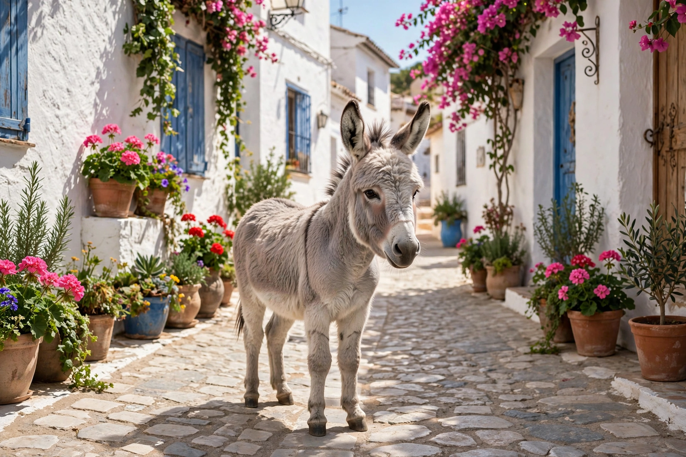

| Author | Juan Ramón Jiménez |
| Language | Spanish |
| Genre | Prose poetry / lyrical prose |
| Published | 1914 (abridged); 1917 (complete, 138 chapters) |
| Setting | Moguer, Andalusia, Spain |

Platero y yo ("Platero and I") is a prose work by the Spanish poet Juan Ramón Jiménez, winner of the Nobel Prize in Literature in 1956. One of the most famous works of Spanish literature, it consists of short lyrical vignettes in which the narrator addresses his donkey, Platero — "small, gentle and smooth... all steel and quicksilver" outside, yet soft as cotton — while wandering the whitewashed streets and countryside of Moguer, the author's home town in Andalusia.
Across its 138 chapters the book moves through the seasons, portraying village life: children, festivals, the poor and the dying, gypsies, the sea, pine groves, well water and sunsets. Its tone mixes tenderness, melancholy and quiet social criticism. Platero dies before the final chapters, and the book closes with the narrator visiting his grave in the orchard, a landmark meditation on innocence, nature and mortality. Although frequently given to children in abridged editions, Jiménez insisted it was not written as a children's book.
An abbreviated edition appeared in 1914; the complete text followed in 1917. Platero y yo has been translated into dozens of languages and is, after Don Quixote, among the most widely read works in Spanish; it is a set text in schools across the Spanish-speaking world. Moguer preserves the poet's house-museum and a life-size monument to Platero.
The text inspired a celebrated setting for narrator and guitar by the Italian composer Mario Castelnuovo-Tedesco (Op. 190, 1960).